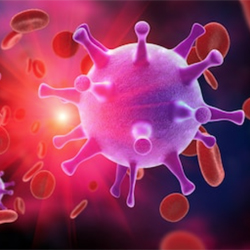

What is HIV?
Welcome to our group's website!.
Welcome!
text here

HIV is a virus that attacks the immune system by killing white blood cells. Since white blood cells help fight infections, without an abundance of them you're more suspectible to extensive common colds. Once your white blood cell count is below 200, you're now AIDS positive. You develop AIDS, a syndrome, from leaving HIV untreated. HIV is not curable yet but it is treatable. Antiretroviral treatment and other medications help prevent HIV from turning into AIDS.
HIV is a virus that attacks the immune system by killing white blood cells. Since white blood cells help fight infections, without an abundance of them you're more suspectible to extensive common colds. Once your white blood cell count is below 200, you're now AIDS positive. The difference between HIV and AIDS is that HIV may not be curable but treatable. Antiretroviral treatment and other medications help prevent HIV from turning into AIDS.